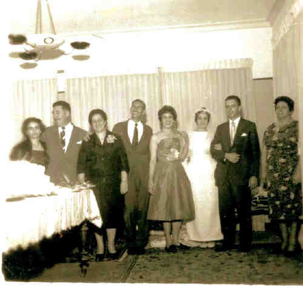

Clementina Petrella
- Nascida em: 26 Out 1938, Brooklin-Sp/Sp
- Casamento: Ricardo Banzoli em 14 Nov 1959

 Notas Gerais: Notas Gerais:
Nasceu em 26-10-1938 na rua Francisco Dias Velho, 840 no Brooklin - SP-SP, atual casa do Miro e da Ciata.
Como era costume na época, seu parto foi feito em casa e a parteira foi D. Antônia, que morava na mesma rua, na altura do n° 600.
Esta senhora, que andava com uma valise na mão, era a parteira do bairro e era muito conhecida e requisitada. Era magrinha, idosa e passava horas sentada na varanda da sua casa.
Na nossa família, ela atendeu a turma de 1938 para trás.
Após 1940, quem atendia era a tia Catarina, irmã da D. Filomena Natrielli, que fez o parto do Nenê, da Filó e do Núncio da Bê, dos filhos da Nina, da Olga, e da Valéria.
Clementina, em 14-11-1959, casou com Ricardo Banzoli (nasceu 23-11-1936, SP-SP e faleceu em 29-04-1993 SP/SP), filho de Guerino Banzoli e Pierina Banzoli.
Eventos notáveis em Sua vida foram:

• fotos: Eloisa - Roque - Mena - Toninho - Ciata - Clementina - Ricardo - Oswaldina.

(Clique na Foto para vê-la no Tamanho Original)")
• fotos: Clementina.

(Clique na Foto para vê-la no Tamanho Original)")
• fotos: Clementina e Ricardinho.

(Clique na Foto para vê-la no Tamanho Original)")
• fotos: Clementina e Leonardo.

(Clique na Foto para vê-la no Tamanho Original)")
• fotos: Stéphanie Clementina Leonardo.
Clementina casad[:o::a] Ricardo Banzoli, filho de Guerino Banzoli e Pierina Banzoli, em 14 Nov 1959. (Ricardo Banzoli nasceu em em 23 Nov 1936 em Sp/Sp.)
|